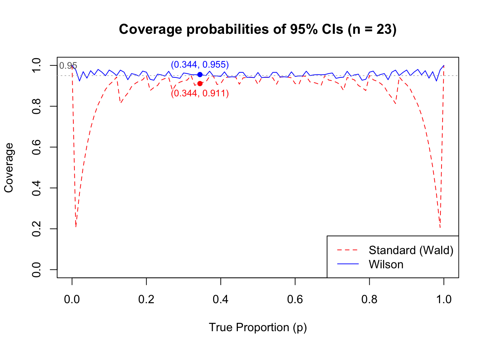

Show the code
# Set parameters
n <- 23
alpha <- 0.05
z <- qnorm(1 - alpha/2)
p_vals <- seq(0, 1, by = 0.01)
# Function to compute Wald CI
wald_ci <- function(y, n) {
phat <- y / n
se <- sqrt(phat * (1 - phat) / n)
lower <- phat - z * se
upper <- phat + z * se
c(lower, upper)
}
# Function to compute Wilson CI
wilson_ci <- function(y, n) {
phat <- y / n
center <- (phat + z^2 / (2 * n)) / (1 + z^2 / n)
margin <- z / (1 + z^2 / n) * sqrt(phat * (1 - phat) / n + z^2 / (4 * n^2))
lower <- center - margin
upper <- center + margin
c(lower, upper)
}
# Compute coverage for each p
wald_coverage <- numeric(length(p_vals))
wilson_coverage <- numeric(length(p_vals))
for (i in seq_along(p_vals)) {
p <- p_vals[i]
probs <- dbinom(0:n, n, p)
wald_hits <- 0
wilson_hits <- 0
for (y in 0:n) {
wald_bounds <- wald_ci(y, n)
wilson_bounds <- wilson_ci(y, n)
# Count if p is inside the interval
if (p >= wald_bounds[1] && p <= wald_bounds[2]) {
wald_hits <- wald_hits + probs[y + 1]
}
if (p >= wilson_bounds[1] && p <= wilson_bounds[2]) {
wilson_hits <- wilson_hits + probs[y + 1]
}
}
wald_coverage[i] <- wald_hits
wilson_coverage[i] <- wilson_hits
}
# Plot
plot(p_vals, wald_coverage, type = "l", col = "red", lty = 2, ylim = c(0, 1),
xlab = "True Proportion (p)", ylab = "Coverage",
main = "Coverage probabilities of 95% CIs (n = 23)")
lines(p_vals, wilson_coverage, col = "blue", lty = 1)
abline(h = 0.95, col = "gray", lty = 3)
text(-0.01, 0.95, labels = "0.95", pos = 3, col = "gray40", cex = 0.8)
legend("bottomright", legend = c("Standard (Wald)", "Wilson"),
col = c("red", "blue"), lty = c(2, 1))
# Highlight example point
p_example <- 0.344
ix <- which.min(abs(p_vals - p_example))
points(p_example, wald_coverage[ix], col = "red", pch = 16)
points(p_example, wilson_coverage[ix], col = "blue", pch = 16)
text(p_example, wald_coverage[ix],
labels = paste0("(", p_example, ", ", round(wald_coverage[ix], 3), ")"),
pos = 1, col = "red", cex = 0.8)
text(p_example, wilson_coverage[ix],
labels = paste0("(", p_example, ", ", round(wilson_coverage[ix], 3), ")"),
pos = 3, col = "blue", cex = 0.8)
